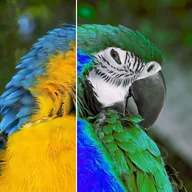

चैनल रीमैप (HSV)

लेयर के अन्य चैनलों से ह्यू, सैचुरेशन, वैल्यू और अल्फा फिर से बनाता है।
सेटिंग्स
| सेटिंग | प्रकार | रेंज | डिफ़ॉल्ट |
|---|---|---|---|
| H | विकल्प | ह्यू, सैचुरेशन, वैल्यू, अल्फा, ल्यूमिनेंस, ज़ीरो, फ़ुल | ह्यू |
| S | विकल्प | ह्यू, सैचुरेशन, वैल्यू, अल्फा, ल्यूमिनेंस, ज़ीरो, फ़ुल | सैचुरेशन |
| V | विकल्प | ह्यू, सैचुरेशन, वैल्यू, अल्फा, ल्यूमिनेंस, ज़ीरो, फ़ुल | वैल्यू |
| A | विकल्प | ह्यू, सैचुरेशन, वैल्यू, अल्फा, ल्यूमिनेंस, ज़ीरो, फ़ुल | अल्फा |